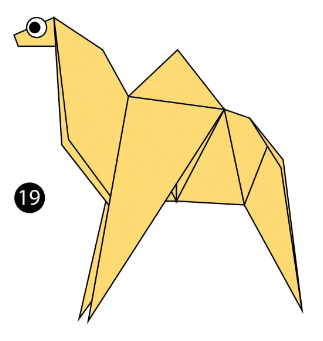
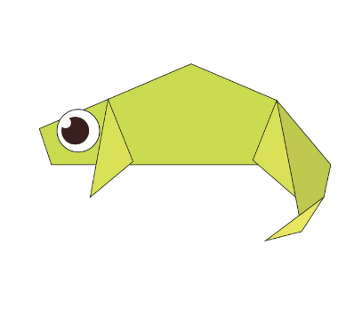
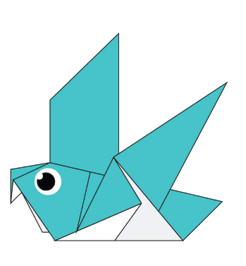
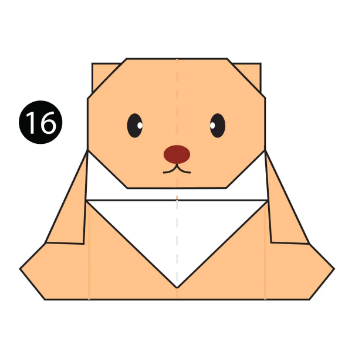
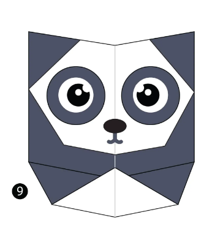
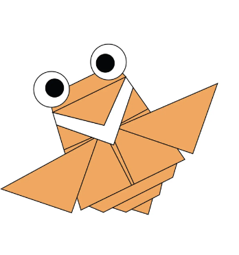

Origami Designs
About Us
Follow Us
How to make Origami Animals

How to make Origami Camel
Facts about Camel:
- Camels have three sets of eyelids and two rows of eyelashes to keep sand out of their eyes.
- Camels have thick lips which let them forage for thorny plants other animals can't eat.
- Camels can reach 7 feet in height (at the hump) and weigh up to 1500 pounds.

How to make Origami Chameleon
Facts about Chameleons:
- Unlike many lizard,chameleons can't regrow their tail.
- Chameleons have eyes in the backs of their heads.
- Chameleons like it hot.
- Chameleons come in a lot of different shapes and sizes

How to make Origami Pigeon:
Facts about Pigeon
- Pigeons are renowned for their outstanding navigational abilities.
- Pigeons are highly sociable animals.
- Pigeons are incredibly complex and intelligent animals.

How to make Origami teddy-bear
Fact about teddy-bears:
- Teddy bears got their name from the story that Teddy Roosevelt.
- He refused to shoot a bear cub while on a hunting trip in 1902
- The first toy stuffed bear was created by German toymaker Margarete Steiff.

How to make Origami Panda
Fact about Pandas
Pandas are good at climbing trees and can also swim.
Pandas go from pink to white and black (or brown).
An adult can eat 12–38 kilos of bamboo per day!

How to make Origami flying-cicada
Fact about Flying-Cicada:
Cicadas can survive a huge fall as babies, or nymphs.
The loud whirring or buzzing sound you hear is an all-male cicada chorus.
Most have red-orange eyes.